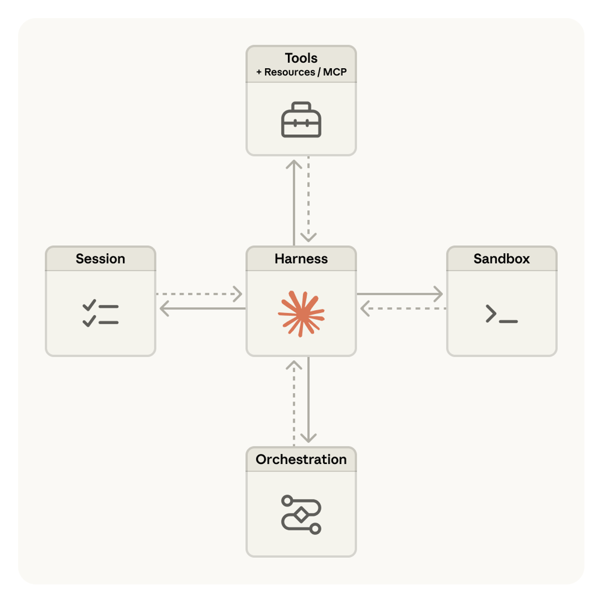
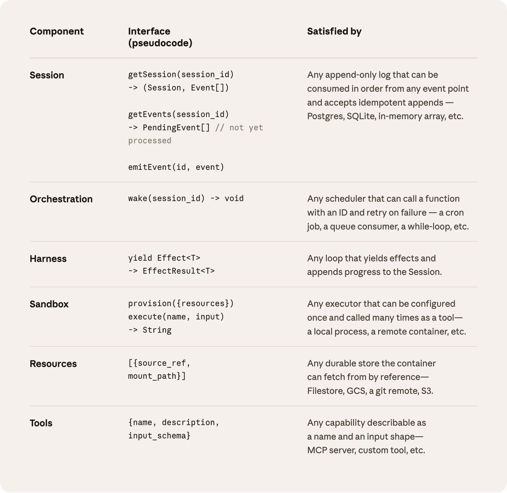
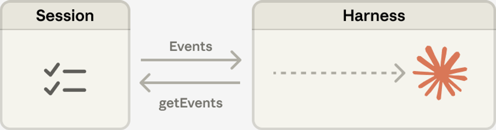
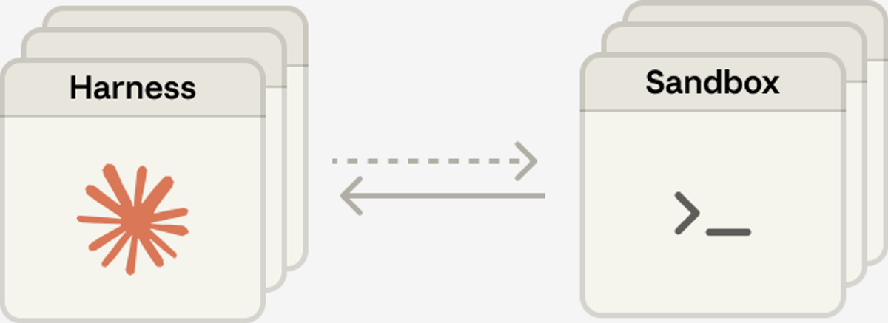

一句话概括：Agent 的 harness（外壳/脚手架）里塞满了「模型自己做不到什么」的假设，而模型每升级一次，这些假设就过期一批。Anthropic 的 Managed Agents 因此不去赌某一个具体 harness，而是把 agent 拆成 session（会话日志）、harness（循环）、sandbox（执行环境）三样东西，只对它们之间的接口下判断——接口稳定，底下的实现可以随时换掉。
起点：harness 里的假设会过期
Anthropic 工程博客一直在谈两件事：怎么构建有效的 agent，以及怎么为长周期任务设计 harness。贯穿其中的一条线索是——harness 本质上是在编码「Claude 自己做不到什么」的假设。而这些假设需要被反复质疑，因为模型一变强，它们就会失效。
原文给了一个很具体的例子：Claude Sonnet 4.5 在感觉到上下文快用完时，会提前草草收尾任务，这种行为有时被称为「上下文焦虑」（context anxiety）。他们的对策是在 harness 里加上下文重置（context resets）。但同一套 harness 换到 Claude Opus 4.5 上，这个行为消失了——那些重置逻辑就成了纯粹的负重（dead weight）。
既然 harness 注定会继续演化，那就别把系统建在某一版 harness 上。Managed Agents 是 Claude Platform 里的一项托管服务，替你运行长周期 agent，而它对外暴露的是一小组「打算比任何具体实现活得更久」的接口——包括比他们今天自己跑的这套实现活得更久。
老问题：为「尚未被想到的程序」做设计
这在计算机领域是个老问题：如何为「programs as yet unthought of」（尚未被想到的程序）设计系统。
几十年前操作系统给出的答案是虚拟化：把硬件抽象成进程、文件这类足够通用的概念，通用到能服务那些当时还不存在的程序。结果是抽象活得比硬件久——read() 并不关心自己读的是 1970 年代的磁盘组还是今天的 SSD。底下的实现自由更替，上层抽象纹丝不动。
Managed Agents 走的是同一条路，把 agent 的组件也虚拟化了：
- session —— 一份只追加（append-only）的日志，记录发生过的一切；
- harness —— 那个调用 Claude、并把 Claude 的工具调用路由到对应基础设施的循环；
- sandbox —— Claude 能跑代码、改文件的执行环境。
三者的实现可以互不干扰地被替换掉。用原文的话说，他们只对这些接口的形状有主见，对接口背后跑什么没有主见。

第一课：别养成一只「宠物」
他们最初的做法是把 agent 的所有组件塞进同一个容器——session、harness、sandbox 共享一个环境。这么做有实打实的好处：改文件就是直接的系统调用，而且根本不需要设计任何服务边界。
但把一切耦合进一个容器，就撞上了基础设施领域的一个老毛病：他们养了一只宠物。
在「宠物 vs 牲畜」（pets vs cattle）这个经典类比里，宠物是有名字、需要人工照料、丢不起的个体；牲畜则是可互换的。在这里，服务器变成了那只宠物：容器一挂，会话就没了；容器一失去响应，就得把它「救回来」。
而「救」的过程意味着调试卡死的会话——问题在于，他们唯一的观察窗口是 WebSocket 事件流，这个窗口说不清故障出在哪一层：harness 的 bug、事件流丢包、容器下线，三种情况长得一模一样。要查清楚，工程师就得在容器里开一个 shell；可那个容器里往往同时装着用户数据——于是这条路实际上等于「没有调试能力」。
第二个问题更结构性：harness 默认 Claude 要处理的东西就跟它待在同一个容器里。当客户希望 Claude 去访问他们自己 VPC 里的资源时，可选项只有两个：要么把网络和 Anthropic 对等互联，要么把这套 harness 搬到客户自己的环境里跑。一个被烘进 harness 的假设，在需要对接不同基础设施时就变成了障碍。
解法：把「大脑」和「双手」拆开
最终的解法是把三样东西彼此解耦：
- 大脑（brain） —— Claude 及其 harness；
- 双手（hands） —— 真正执行动作的 sandbox 和工具；
- 会话（session） —— 事件日志本身。
每一样都变成一个对其它两样几乎不作假设的接口，因而可以独立地故障、独立地被替换。
harness 搬出容器
解耦之后，harness 不再住在容器里；它调用容器的方式跟调用任何其它工具一样：execute(name, input) → string。
于是容器变成了牲畜。容器死了，harness 只是接到一个工具调用错误，把它原样交还给 Claude；如果 Claude 决定重试，就用一份标准配方 provision({resources}) 起一个新容器。再也不需要把坏掉的容器抢救回来。
harness 自己也能崩
harness 同样变成了牲畜。因为会话日志坐在 harness 外面，harness 内部就没有任何东西需要在崩溃中幸存：
- 崩了之后用
wake(sessionId)重新拉起一个； - 用
getSession(id)取回事件日志； - 从最后一个事件继续往下跑。
而在 agent 循环运行期间，harness 通过 emitEvent(id, event) 往 session 里写，保证事件有一份持久记录。

安全边界：凭证必须从沙箱里够不着
这一节是我认为原文里最值得单独拎出来的部分。
在耦合式设计里，Claude 生成的不可信代码和凭证跑在同一个容器里——这意味着一次 prompt injection 只需要说服 Claude 去读一下自己的环境变量就够了。攻击者一旦拿到这些 token，就能开出全新的、不受限的会话，并把活派给它们。
把 token 权限收窄当然是个显而易见的缓解措施，但原文指出了它的软肋：收窄权限本身又是在编码一条「Claude 拿着受限 token 做不到什么」的假设，而 Claude 正在变得越来越聪明。
结构性的修法是：让 token 从 Claude 生成代码运行的那个沙箱里根本够不着。他们用了两种模式——凭证要么和资源捆绑在一起，要么存放在沙箱之外的 vault 里：
- Git：在沙箱初始化阶段用仓库的 access token 完成 clone，并把它接进本地的 git remote。之后沙箱里的
git push/git pull照常工作，而 agent 全程没碰过那个 token。 - 自定义工具：走 MCP，OAuth token 存在安全 vault 里。Claude 通过一个专用代理调用 MCP 工具，代理接收的是一个与该 session 关联的 token，再凭它去 vault 取出对应凭证、向外部服务发起调用。harness 自始至终不知道任何凭证的存在。
session 不等于 Claude 的上下文窗口
长周期任务经常会超出 Claude 上下文窗口的长度，而现有的应对手段几乎都要求做出不可逆的取舍。原文回顾了他们此前在 context engineering 上的工作：
- compaction（压缩）：让 Claude 把上下文窗口存成一份摘要；
- memory 工具：让 Claude 把上下文写进文件，从而实现跨会话的学习；
- context trimming（裁剪）：选择性地移除旧的工具结果、思考块等 token。
问题在于，「留哪些、丢哪些」这类不可逆决策会导致失败——你很难预知未来的对话轮次会需要哪些 token。一旦消息被 compaction 步骤改写，harness 就把被压缩的消息从上下文窗口里移除了；除非另行存储，否则它们再也找不回来。
已有的研究给过一个方向：把上下文当作一个活在上下文窗口之外的对象。比如让上下文成为 REPL 里的一个对象，模型通过写代码来过滤、切片，以编程方式访问它。

getEvents 回头查询——上下文成了一个可反复审问的外部对象。图片来源：AnthropicManaged Agents 里，session 就扮演这个「窗口之外的上下文对象」，只不过它不是存在 sandbox 或 REPL 里，而是持久化在会话日志中。接口 getEvents() 让大脑能够按位置切片去审问上下文，用法相当灵活：
- 从上次读到的地方接着往下读；
- 回卷到某个关键时刻之前几个事件，看清事情的来龙去脉；
- 在执行某个动作之前，重读一遍相关上下文。
取回来的事件，还可以在 harness 里先做变换再送进 Claude 的上下文窗口——变换逻辑完全由 harness 定义，包括为了拉高 prompt 缓存命中率而做的上下文组织，以及各种 context engineering。
原文把这个分工讲得很清楚：session 只负责「可恢复的上下文存储」，harness 负责「任意的上下文管理」。之所以要拆开，是因为他们无法预测未来的模型会需要什么样的 context engineering——所以接口把这部分推给 harness，自己只保证一件事：session 是持久的，且随时可被审问。
多个大脑，多双手
多个大脑（many brains）
解耦顺手解决了他们最早的一类客户投诉：想让 Claude 访问自家 VPC 里的资源，此前唯一的路就是网络对等互联，因为装着 harness 的容器假定每一样资源都紧挨着自己。harness 一旦搬出容器，这个假设就不存在了。
同一个改动还带来了性能收益。大脑在容器里时，多少个大脑就要多少个容器：容器没起来之前推理就无法开始，每个会话都要先付一笔完整的容器启动成本；哪怕这个会话压根不会用到 sandbox，也照样得 clone 仓库、把进程拉起来、去服务器拉取待处理事件。
这段死时间体现在 TTFT（time-to-first-token，从接下任务到吐出第一个响应 token 的等待时长）上——原文特意点明，这是用户感受最尖锐的那种延迟。
解耦之后，容器改由大脑按需通过一次工具调用（execute(name, input) → string）来创建：用不上容器的会话就不必等它。只要编排层从会话日志里拉到了待处理事件，推理立刻就能开始。
用这套架构，他们的 p50 TTFT 下降了大约 60%，p95 下降超过 90%。
而扩展到多个大脑，也就变成了「启动多个无状态 harness，只在需要时才把它们接到双手上」这么简单。
多双手（many hands）
他们还希望每个大脑能连上多双手。这在实践中意味着 Claude 必须同时推理多个执行环境、并决定把活派到哪儿去——这比在单个 shell 里操作是更难的认知任务。
原文对这段历史的复盘很有意思：当初之所以把大脑放进单个容器，正是因为早期模型还做不到这件事；而随着智能水平提升，单容器反过来成了瓶颈——那个容器一挂，大脑伸出去的每一只手的状态全都丢了。
解耦之后，每一只手都只是一个工具：execute(name, input) → string，进去一个名字和输入，回来一个字符串。这个接口能容纳任何自定义工具、任何 MCP server，以及他们自己的工具。
harness 并不知道那个 sandbox 到底是一个容器、一部手机，还是一个宝可梦模拟器。
而且因为没有任何一只手被绑死在某个大脑上，大脑之间可以互相传递双手。

结论：Managed Agents 是一个「元框架」
回到开头那个老问题：如何为尚未被想到的程序设计系统。操作系统之所以能撑几十年，靠的就是把硬件虚拟化成足够通用的抽象。Managed Agents 想做的是同一件事——设计一个能容纳未来的 harness、sandbox 或其它 Claude 周边组件的系统。
所以原文把它定位成一个 meta-harness（元框架）：它对「Claude 未来需要哪个具体 harness」不持立场，而是提供一组通用接口，让许多不同的 harness 都能跑在上面。文中举了两类例子：Claude Code 是一个优秀的通用 harness，他们自己在各种任务上广泛使用；同时也有研究表明，针对特定任务的 agent harness 在窄领域里表现出色。Managed Agents 打算把这些都容纳进来，并随着 Claude 智能的演进持续匹配。
元框架的设计意味着——只在 Claude 周围的接口上有主见：
- 他们判断 Claude 会需要操纵状态的能力（这就是 session）；
- 会需要执行计算的能力（这就是 sandbox）；
- 会需要扩展到多个大脑、多双手。
接口的设计目标是让这些能力在长时间跨度上可靠且安全地运行。但除此之外，他们对 Claude 究竟需要多少个、以及位于何处的大脑与双手，不作任何假设。
译者附记
几个我觉得对自建 agent 系统最有借鉴价值的点：
- 「harness 编码的是模型的短板」这个视角很锋利。它意味着 harness 里的每一段补丁都自带保质期，值得定期回头做减法——上下文重置那个例子就是活的反面教材。
- 把会话日志放到 harness 之外，是让 harness 从「宠物」变成「牲畜」的关键一步。崩了就重启、从最后一个事件续跑，这条链路的前提是日志不跟 harness 同生共死。
- 凭证不可达比凭证权限小更靠得住。「收窄 scope」本质上仍是在赌模型做不到某件事，而这个赌注每次模型升级都在贬值；把 token 挪出沙箱才是结构性的修法。
- 不可逆的上下文压缩是有代价的。session 作为可按位置切片、反复回读的外部对象，把「存」和「管」拆成两件事——存的那一半保证不丢，管的那一半随模型演进自由更换。
- 按需 provision 容器带来的 TTFT 收益（p50 −60%、p95 −90%）大得超出直觉，值得对照检查自己的冷启动路径上有多少「不用也得等」的步骤。
原文致谢：Written by Lance Martin, Gabe Cemaj, and Michael Cohen；感谢 Nodir Turakulov 与 Jeremy Fox 的讨论，以及 Agents API 团队和 Jake Eaton 的贡献。
中文译介：lonX · 完整原文请读 anthropic.com/engineering/managed-agents